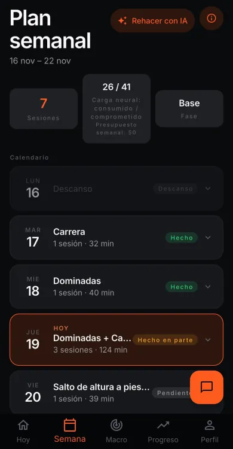
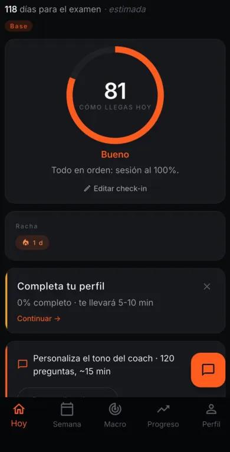
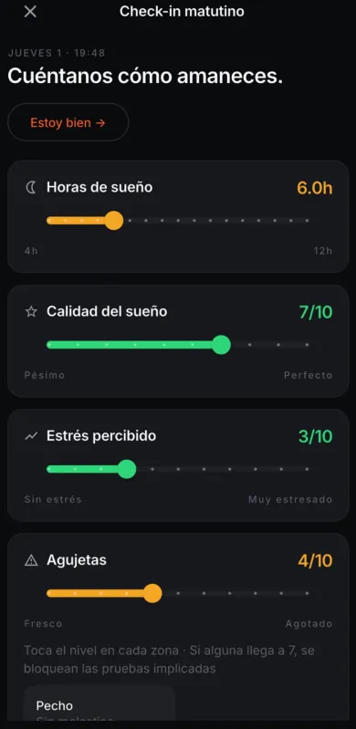
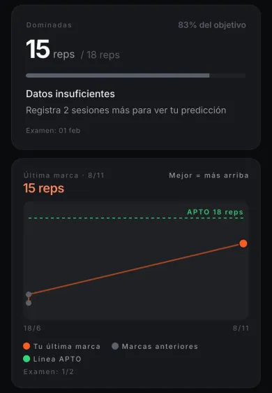

Preparas varias pruebas físicas. ¿Qué entrenas hoy?
Carrera, natación, cuerda, press banca. Cada prueba pide algo distinto y la semana no da para todo. Trenzia las reparte en un plan con el baremo de tu convocatoria y lo ajusta cada día según cómo llegas.
Próximamente en App Store y Google PlayLo que pasa cuando preparas varias pruebas a la vez
- Entrenas mucho y no sabes si llegas.
- Acabas entrenando tu prueba favorita y la floja se queda atrás.
- En muchas convocatorias, una sola prueba por debajo del mínimo te deja fuera.
Cómo lo resuelve Trenzia

Un solo plan para todas tus pruebas
Reparte carrera, natación, fuerza y técnica en tu semana, sin pasarte de carga ni dejar ninguna atrás.

Sabes qué toca hoy
Abres la app y tienes la sesión del día, con sus series, ritmos y descansos.

Se ajusta cada mañana
Cuentas cómo llegas. Si vienes cansado o con molestias, la sesión cambia.

Cuánto te falta para el apto
Apuntas tus marcas o haces un simulacro y ves cuánto te falta en cada prueba, con el baremo de tu convocatoria. Si tu convocatoria no está, subes las bases en PDF y la app las lee.
Trenzia hace el plan. La técnica la corrige tu preparador.
Cómo funciona
- Elige tu oposición. Busca tu convocatoria, sea de bomberos, policía local, Guardia Civil u otro cuerpo, y la app carga sus pruebas y su baremo. Si no está, sube las bases en PDF y las lee por ti.
- Mide dónde estás. Apunta tus marcas o haz un simulacro. Verás tu nota y cuánto te falta para el apto en cada prueba.
- Entrena con tu plan. Cada semana, hasta el día del examen, un plan que reparte todas tus pruebas. Cada día cuentas cómo llegas y la sesión se ajusta.
Preguntas frecuentes
¿Para qué oposiciones sirve?
Para las que tienen pruebas físicas: bomberos, policía local, Policía Nacional, Guardia Civil, Ertzaintza, Mossos, Policía Foral y Fuerzas Armadas. Mira si está la tuya.
¿Y si mi convocatoria no está?
Subes las bases en PDF y la app lee las pruebas y el baremo.
¿Sustituye a mi preparador?
No. Trenzia organiza y ajusta tu plan cada día. La técnica de cada prueba la corrige una persona que te vea.
¿Me asegura el apto?
No. Ninguna app puede. Te dice cuánto te falta en cada prueba y qué entrenar para recortarlo.
¿De dónde salen las marcas?
De las bases oficiales de cada convocatoria. Cada ficha enlaza a su boletín. Manda siempre la convocatoria oficial.
¿Cómo la pruebo?
Apúntate a la prueba cerrada, para iPhone y Android: las plazas son limitadas y se cubren por orden de llegada.
¿Quieres ver ya las pruebas de tu oposición? Mira sus marcas y calcula tu nota.
Quiero probar la app